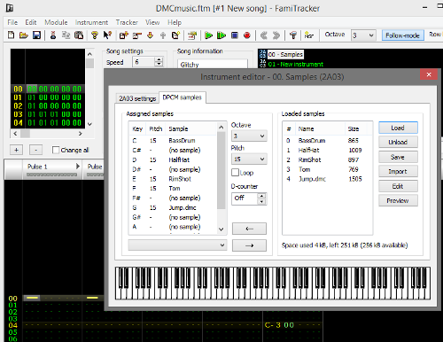

17、DPCM声音
DMC文件很大，因此尽量避免使用，很多游戏都不用。
如果你想要发出很真实的音效，比如发出“战斗”，狗叫，鼓声，低音效果等还是可以的。
他能播放的时间很短，比如 0.2秒，可以使用Audacity这样的编辑器编辑
DMC的采样频率越高，占用的ROM字节就会越多。采样频率越高，音质也会越好，太低的频率下音质也会很差。
Famitracker可以导入样本，并将它们映射到注释。对于famitone2，您必须将样本置于仪器零上，并使用音符范围C-1..D-6。此外，仪器零必须有一个音量序列，即使你不使用它（只是一个famitone2的怪癖）。这是2a03设置，仪器设置。在音量旁边放置一个复选标记（对于所有乐器都是如此）。

即使您只想将样本用作独立的音效，而不是在歌曲中，它也必须像这样包含在歌曲中。
现在，当您导出文本时，它将定义dmc文件。当你使用text2data时，它将输出一个dmc文件。在crt0.s中包含“dmc”或“sample”或其他任何段。我称之为“样本”。
这是棘手的部分。DMC样本必须介于$ c000和$ ffc0之间。优选地尽可能地到最后。从ffc0中减去样本的字节大小，然后向下舍入到下一个xx40。在cfg文件中，定义SAMPLE段以从那里开始。
现在，同样，转到crt0.s的顶部并定义FT_DPCM_OFF以相同的值开始。
.dmc文件长度为5,248字节。这对于NES游戏来说相当大。不过，它可以用于简单的示例代码。
现在，如果样本在音乐中，他们应该播放音乐。
但是，如果你想要它们是声音效果，你必须在你的代码中调用它们，比如
sample_play（样品＃）
我们怎么知道样品编号是什么？这取决于您在famitracker文件中将它们映射到的内容。如果你看一下text2data的输出文件（我的是“DMCmusic.s”），你会看到一个样本区域。您可以通过右侧的非零长度来判断我们的样本是25,27,29,30和32.它从C1开始计数，所以如果我们将它映射到C1，那么它将是sample_play（1 ）。但我想要的样本是G3，所以我们需要sample_play（32）。
我把这个换了一个新的跳跃。这只是我的声音，说“跳”，是愚蠢的。🙂
希望这是有道理的。
https://github.com/nesdoug/20_DPCM/blob/master/platformer4.c
https://github.com/nesdoug/20_DPCM
我依旧很懒。。。就前几行凑合翻译了下，后面的以后再改了